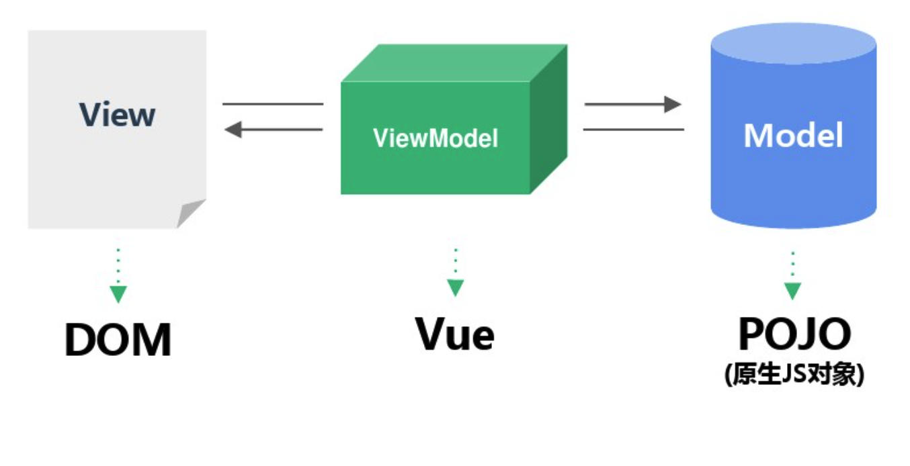

目录
- ES6简介
- Vue用法介绍
- Vue原理
- Vuex用法
ECMAScript6 简介
ES6是JavaScript语言的下一代标准， 已经在2015年正式发布。
它的目标是使JavaScript语言可以用来编写复杂的大型应用程序，成为企业级开发语言。
ES6即是ES2015， 标准在每年的6月份正式发布一次，作为当年的正式版本。
let和const变量声明
let类似var, 用来声明变量， 但是区别在于作用域是块级的
{
let a = 10;
var b = 1;
}
console.log(a); //ReferenceError
for(let i = 0, len = arr.length; i < len; i++){
}
let作用域特性
- 块级作用域
- 不存在变量提升
- 不允许重复声明
- 暂时性死区TDZ(有let块不再受外部影响，即便是let之上的)
TDZ
var tmp = 123;
if (true) {
tmp = 'abc'; // ReferenceError
let tmp;
}
const
const是只读常量，常量的值不能改变
特性上除了不能改变之外都与let相似
新框架下均需使用let/const， 应该避免使用var
解构
let [foo, [[bar], baz]] = [1, [[2], 3]];
const obj = { idx: 1 }
let { idx } = obj;
let [head, ...tail] = [1, 2, 3, 4]; //tail是[2,3,4]
let [ , , third] = ["foo", "bar", "baz"];
解构默认值
let [foo = true] = [];
var {x, y = 5} = {x: 1};
函数参数的解构
const obj = {
id: 1,
username: 'PATech'
}
function output({ id = -1, username }) {
}
字符串的扩展
- includes 类似之前的indexOf， 直接返回Boolean
- startsWith
- endsWith
- padStart
- padEnd
- 模板字符串
新增方法使用的注意事项
如果使用了Babel进行ES6 -> ES5转义的话，babel-core并不能转义prototype上的方法
需要使用babel-polyfill进行转义
模板字符串
const name = 'liangshuai';
const greet = Hello, ${ name };
函数上的新特性
- 默认参数(参考函数参数析构)
- rest参数
- 扩展运算符
- 箭头函数
rest参数
function restParams(a, b, ...c) {
console.log(a,b,...c);
}
restParams(1, 2, 3, 4, 5); // 1,2,3,4,5
rest参数用法同Java的不定参数类似， 只能放在最后且只能有一个不定参数
扩展运算符
将一个数组转为用逗号分隔的参数序列
const foo = function(a, b, c) {
console.log(a, b, c);
}
const arr = [1, 2, 3];
foo(...arr);
项目中使用扩展运算符的一个案例
export default {
name: 'apps-list',
components: {
ContentTitle,
AppItem
},
computed: {
...mapGetters({
mine: 'getMineList',
recentOpen: 'getRecentOpenList'
})
}
}
箭头函数
类似于Java8的Lambda
this.$validator.validateAll().then((success) => {
});
const default = () => [] // 默认返回箭头函数后值
const rtnObj = () => ({ name: 'Vue' });
箭头函数中的this
箭头函数会自动绑定上下文this
function foo() {
setTimeout(() => {
console.log("id:", this.id);
});
}
foo.call( { id: 42 } );
对象的扩展
const birth = '2000/01/01';
const Person = {
name: '张三',
birth, //等同于birth: birth
hello() { console.log('我的名字是', this.name); } // 等同于hello: function ()...
};
Module
//export.js
export const username = 'Michael';
export {firstName, lastName, year};
export function f() {};
export {
v1 as streamV1,
v2 as streamV2,
v2 as streamLatestVersion
};
export default {
a: '111';
}
//import.js
import { firstName, lastName, f, streamV1 } from './export';
import * as all from './export';
import obj from './export';
Vue用法
- Vue简介
- Vue模版语法
- Vue组件
- Render函数
- 插件机制
- Mixins
- Vue指令
Vue是数据驱动 ＋ 组件化的前端开发框架
DEMO
<div id="demo">
<h1 @click="handle">{{ msg }}</h1>
</div>
const vm = new Vue({
el: '#demo',
data: {
msg: 'Hello, Vue.js!'
},
methods: {
handle() {
console.log('Click');
}
}
})
模版语法
<div id="app-5">
<p>{{ message }}</p>
<span>{{ message.split('').reverse().join('') }}</span>
<div v-html="rawHtml"></div> <!-- 注意XSS攻击风险 -->
<p v-if="seen">Now you see me</p>
<button v-on:click="reverseMessage">逆转消息</button>
<div v-for="item in groceryList" id="item.id"></div>
<div v-bind:class="{ active: isActive }"></div>
<div :class="{ active: isActive, 'text-danger': hasError }"></div>
<div :class="classObject"></div> <!-- classObject: { active: true } -->
<div :class="[activeClass, errorClass]">
<div :class="[isActive ? activeClass : '', errorClass]">
<div :style="{ color: activeColor, fontSize: fontSize + 'px' }"></div>
</div>
模版语法 -- 循环
<div v-for="item in groceryList"></div>
<div v-for="(item, index) in groceryList"></div>
<div v-for="item of groceryList"></div>
<div v-for="(value, key) in object"></div>
<div><span v-for="n in 10">{{ n }}</span></div>
修饰符
<form v-on:submit.prevent="onSubmit"></form> <!-- event.preventDefault() -->
<a @click.stop="handle">Link</a> <!-- event.stopPropagation() -->
<input v-model="newTodoText" v-on:keyup.enter="addNewTodo" placeholder="Add a todo"/>
过滤器
<div>{{ message | capitalize }}</div>
<div>{{ message | filterA | filterB }}</div>
<div>{{ message | filterA('arg1', arg2) }}</div>
new Vue({
filters: {
capitalize: function (value) {
if (!value) return ''
value = value.toString()
return value.charAt(0).toUpperCase() + value.slice(1)
}
}
})
表单绑定
<input v-model="message" placeholder="edit me">
<p>Message is: {{ message }}</p>
<input type="checkbox" id="checkbox" v-model="checked">
<label for="checkbox">{{ checked }}</label>
<select v-model="selected">
<option v-for="option in options" v-bind:value="option.value">
{{ option.text }}
</option>
</select>
<span>Selected: {{ selected }}</span>
组件
<div id="example">
<my-component></my-component>
</div>
Vue.component('my-component', {
template: '<div>A custom component!</div>'
});
new Vue({
el: '#example'
});
组件的常见配置项
export default {
template: '',
data: {
message: 'hello'
},
props: {
propA: Number,
propE: {
type: Object,
default: () => { message: 'hello' }
}
},
methods: {
handle() {}
},
computed: {
computeDemo: () => propE.message + propA;
},
components: { compA, compB },
created() {},
... // 其它生命周期方法
}
组件生命周期

组件之间的通信
- Props Down, Events Up
- 对象或者数组作为Props传递给子组件
- Event Bus
- Vuex
Props Down
父组件的props更新之后，自组件总会拿到最新的数据
<!-- Parent Component -->
<child :propA="propA" propB="propB"></child>
Vue.component('child', {
props: {
propA: Number,
propB: {
type: String
},
propC: {
type:Object,
default: () => {}
}
},
template: '<span>{{ myMessage }}</span>'
})
Events Up -- Parent
<template>
<div>
<child-comp v-on:change="handle"></child-comp>
</div>
</template>
<script>
export default {
name: 'parent',
methods: {
handle(val) {
//父组件接收val
}
}
}
</script>
Events Up -- Child
<template>
<div>
<input v-model="username" @input="emit"></child-comp>
</div>
</template>
<script>
export default {
name: 'child',
methods: {
emit() {
this.$emit('change', this.username);
}
}
}
</script>
对象或者数组作为Props传递给子组件
不是最佳实践，但是在某些场合下是非常有用的， 比如VT2.0 创建流水线， 整个表单特别大，分了几个Tab页， 每个Tab页又划分为N多个表单组， 一个Tab页里面通常还有N多个Job 每个Job都是插件化的，字段和结构都可能需要插件自定义 这个时候不管是Vuex还是Event Bus实现起来都很繁琐， 需要每个插件手动同步数据， 使用对象和数组类型的就很方便同步更新
Event Bus
const bus = new Vue();
bus.$emit('change', val);
bus.$on('change', (val) => { console.log(val); })
Render函数
Vue.component('anchored-heading', {
render: function (createElement) {
return createElement(
'h' + this.level,
this.$slots.default
)
},
props: {
level: {
type: Number,
required: true
}
}
})
createElement参数
createElement(String|Object|Function, Object, String|Array)
- 第一个参数返回一个HTML标签
- Object模版相关属性的相关对象
- 第三个参数如果是字符串就是标签的innerText, 如果是数组就是子节点
Data Object参数
{
'class': { foo: true, bar, false },
style: { fontSize: '14px' },
attr: { id: 'node_1001'},
props: {...}
on: { click: this.clickHandler },
nativeOn: { click: this.nativeClickHandler }
}
createElement应用
<slot>{{ message }}</slot>
new Vue({
el: '#editor',
data: {
message: null
},
created() {
this.$slots.default = [ this.renderField() ]
},
methods: {
renderField () {
const h = this.$createElement;
return h('span', {'style': {'fontSize': '20px','color': 'red'}}, 'Wizard')
}
}
})
Mixin
灵活的分布式复用 Vue 组件的方式
- 组件内部
- 全局
组件内部使用var myMixin = { methods: { hello: () => {console.log('hello from mixin!') } } }mixins选项 全局使用Vue.mixin(mixin)注册，所有组件均有这些功能
插件
插件是一个普通的JS对象， 里面包含了一个install方法， Vue会传递
const MyPlugin.install = function(Vue, options) {
Vue.mixin
Vue.directive
Vue.prototype.$notify
}
插件使用 Vue.use(MyPlugin) 启用
Vue原理与源码
深入Vue响应式原理
- Object.defineProperty
- Array
- Observer
- Watcher
- Dep
Vue响应式架构
Object.defineProperty
ES5新增的方法，无法Shim， 所以Vue不兼容IE8以及浏览器
const a = {};
a.b = 123;
// 等价于
Object.defineProperty(a,'b',{
value:123,
writable:false,
enumerable:false,
configurable:false
})
Getter/Setter
var a= {}
Object.defineProperty(a, 'b',{
set:function(newValue){
console.log("setter"＋newValue)
},
get:function(){
console.log("getter")
return 2 // DEMO
}
})
Vue里面Observer的实现 -- constructor
export class Observer {
...
constructor (value: any) {
this.value = value
this.dep = new Dep()
this.vmCount = 0
def(value, '__ob__', this) //在值上挂载__ob__表示已经Observer
if (Array.isArray(value)) {
const augment = hasProto
? protoAugment
: copyAugment
augment(value, arrayMethods, arrayKeys)
this.observeArray(value) // 数组的话走数组的Observer
} else {
this.walk(value) //对象类型的需要递归遍历，进行Observer
}
}
}
walk
walk (obj: Object) {
const keys = Object.keys(obj)
for (let i = 0; i < keys.length; i++) {
defineReactive(obj, keys[i], obj[keys[i]])
}
}
defineReactive
let childOb = observe(val)
Object.defineProperty(obj, key, {
...
get: function reactiveGetter () {
const value = getter ? getter.call(obj) : val
if (Dep.target) {
... // 这部分主要是为了收集依赖， 暂时忽略
}
return value
},
set: function reactiveSetter (newVal) {
...
if (newVal === value || (newVal !== newVal && value !== value)) return //没有更新不触发
setter ? setter.call(obj, newVal) : (val = newVal);
childOb = observe(newVal) // 递归Observer, 所以新增的属性是对象类型，该对象里面也会被Observer， 根上却不能新加属性
dep.notify() // 通知，触发更新
}
})
Observer Array
const arrayProto = Array.prototype
export const arrayMethods = Object.create(arrayProto) //很关键！不至于影响Array.prototype
['push', 'pop', 'shift', 'unshift', 'splice', 'sort', 'reverse'] .forEach(function (method) {
const original = arrayProto[method]
def(arrayMethods, method, function mutator () {
... // args 是参数
const result = original.apply(this, args)
const ob = this.__ob__
let inserted
...
if (inserted) ob.observeArray(inserted) // Observer数组成员
// notify change
ob.dep.notify()
return result
})
})
Vue Watch的实现
不同于Angular脏检查的watch，Vue的watch也是基于setter/getter， 所以不会太影响性能
export default class Watcher {
constructor (vm, expOrFun, cb, options) {
...
// 确保watcher的getter是一个function
if (typeof expOrFn === 'function') {
this.getter = expOrFn
} else {
this.getter = parsePath(expOrFn) //parsePath返回一个function，该function返回要访问的对象
...
}
this.value = this.lazy ? undefined : this.get() // 实现watch的关键
}
}
Watch的实现 -- get()
get () {
pushTarget(this) // 先更新Dep.target,创建依赖
let value
const vm = this.vm
if (this.user) {
value = this.getter.call(vm, vm) // 调用getter
popTarget()
this.cleanupDeps()
return value
}
pushTarget的实现
Dep.target = null
const targetStack = []
export function pushTarget (_target: Watcher) {
if (Dep.target) targetStack.push(Dep.target)
Dep.target = _target // 为Dep.target赋当前watch
}
export function popTarget () {
Dep.target = targetStack.pop()
}
再回头看看defineReactive的实现
Object.defineProperty(obj, key, {
enumerable: true,
configurable: true,
get: function reactiveGetter () {
const value = getter ? getter.call(obj) : val
if (Dep.target) {
dep.depend() // 用于创建依赖
if (childOb) {
childOb.dep.depend()
}
if (Array.isArray(value)) {
dependArray(value)
}
}
return value
},
set: function reactiveSetter(newVal) {
...
dep.notify() // 设置了新值
}
}
notify的实现
dep.notify() --> watcher update() --> watcher run --> cb
通过上面的流程实现了更新后的回调
Virtual DOM的实现
Virtual DOM的必要性
- DOM更新昂贵且耗时， 特别是频繁的触发reflow
- 通过JS来生成一份虚拟的DOM， 避免DOM查找的代价
- 虚拟DOM不需要频繁的更新， 可以批量更新
- 不需要手动更新DOM
DEMO
<ul id='myId'>
<li>Item 1</li>
<li>Item 2</li>
<ul>
let domNode = {
tag: 'ul'
attributes: { id: 'myId' }
children: [
//这里是 li
]
};
VNode的属性
tag: string | void; // 当前节点标签名
data: VNodeData | void; // 当前节点的数据对象
children: ?Array<VNode>; // 前节点的子节点
text: string | void; // 当前节点的文本，一般用于文本节点
elm: Node | void; // 虚拟节点对应的真实DOM节点
ns: string | void;
context: Component | void; // 编译作用域
functionalContext: Component | void; // 函数化组件的作用域
key: string | number | void; // 节点的key属性，用于作为节点的标识，有利于patch的优化
componentOptions: VNodeComponentOptions | void;
componentInstance: Component | void; // component instance
parent: VNode | void; // 父节点
raw: boolean; // raw html
isStatic: boolean; // 静态节点的标识
isRootInsert: boolean; // necessary for enter transition check
isComment: boolean; // empty comment placeholder?
isCloned: boolean; // 当前节点是否为克隆节点
isOnce: boolean; // is a v-once node?
VNode的分类

经典Virtual DOM的三个步骤
- createElement() 用 JavaScript对象(虚拟树) 描述 真实DOM对象(真实树)
- diff(oldNode, newNode) : 对比新旧两个虚拟树的区别，收集差异
- patch() 将差异应用到真实的DOM
Vue的patch实际上包含了diff
createElement 的实现
export function createElement (context, tag, data, children, normalizationType) {
if (data && data.__ob__) {
// data是被Observer的不能用做虚拟节点的data
createEmptyVNode() // data在vnode渲染过程中可能会被改变，这样会触发监控，导致不符合预期的操作
}
if(!tag) createEmptyVnode() // tag为空的不知道怎么创建，所以创建空节点
...
if(typeof tag === 'string') {
if (config.isReservedTag(tag)) {
// HTML 的标签，或者Weex内置的标签
vnode = new VNode(config.parsePlatformTagName(tag), data, children, undefined, undefined, context )
}else if ((Ctor = resolveAsset(context.$options, 'components', tag))) {
//如果不是保留标签，那么我们将尝试从vm的components上查找是否有这个标签的定义
vnode = createComponent(Ctor, data, context, children, tag)
}else {
// 不符合以上情况，正常创建一个VNode 兜底方案
vnode = new VNode(tag, data, children, undefined, undefined, context )
}
} else {
// tag不是字符串，认为tag是组件构造类
vnode = createComponent(tag, data, context, children)
}
return vnode
}
Patch函数的实现
Vue 基于Snabbdom Virtual DOM的diff 和 patch算法
function patch (oldVnode, vnode, hydrating, removeOnly, parentElm, refElm) { ... }
oldVnode老的Vnodevnode新的VNodehydrating是否要跟真是dom混合removeOnly特殊flag，用于<transition-group>组件parentElm父节点refElm新节点将插入到refElm之前
＃ Patch函数的实现
// 如果新的不存在但是老的存在，说明意图是要销毁老节点
if (!vnode) {
if (oldVnode) invokeDestroyHook(oldVnode)
return
}
let isInitialPatch = false
const insertedVnodeQueue = []
if (!oldVnode) {
// empty mount (likely as component), create new root element
isInitialPatch = true
// 老的不存在，说明需要创建新的VNode
createElm(vnode, insertedVnodeQueue, parentElm, refElm)
} else {
// 老的新的都存在，见下一页
}
Patch函数的实现
const isRealElement = isDef(oldVnode.nodeType)
if (!isRealElement && sameVnode(oldVnode, vnode)) {
// 新的老的是同样的节点，调用patchVnode进行patch
patchVnode(oldVnode, vnode, insertedVnodeQueue, removeOnly)
} else {
// 当vnode和oldVnode不是同一个节点时，
// 如果oldVnode是真实dom节点或hydrating设置为true
// 需要用hydrate函数将虚拟dom和真实dom进行映射
// 然后将oldVnode设置为对应的虚拟dom，找到oldVnode.elm的父节点
// 根据vnode创建一个真实dom节点并插入到该父节点中oldVnode.elm的位置
}
patchVnode 算法
- 如果oldVNode跟vnode完全一致， 不做什么操作
- 两者都是静态节点， 具有相同的key， 并且vnode是克隆节点或者v-once指令控制的节点， 只需要把oldVnode。ele 和oldVnode.child都复制到vnode上
- 如果vnode是文本节点，但新旧文本不同，直接更新新的就可以了
- 如果vnode不是文本节点
- 如果两者都有子节点，且两者不完全一致，执行更新子节点操作
- 如果只有oldVnode有子节点，就删除这些节点
- 如果只有vnode有子节点，就创建这些节点
- 如果都没有子子节点，oldVnode是文本节点，就把vnode.elm设置为空字符串
Vuex
前端状态管理
- 集中式管理状态和数据
- 集中式以后，各个组件之间不需要手动同步数据
- 方便调试，Vue-devtools可以直接查看数据
State
- state就是集中式的数据存储对象
- 对于一个Vuex的实例来说，只有一个state tree
- state可以划分为不同的模块
Mutations
- 修改state tree的唯一途径
- 每个Mutation有一个名字和一个handler
- 名字命名通常要见名知意
- handler必须是同步的
- handler的第一个参数固定为state，后面的参数可以是数据
Actions
- 触发(多个)Mutation
- 可以是异步的
- 可以把Ajax接口调用封装在action里面, 组件只应该关心数据，不必关心数据怎么来的
- 组件内使用this.$store.dispatch(action, payload)来触发Action